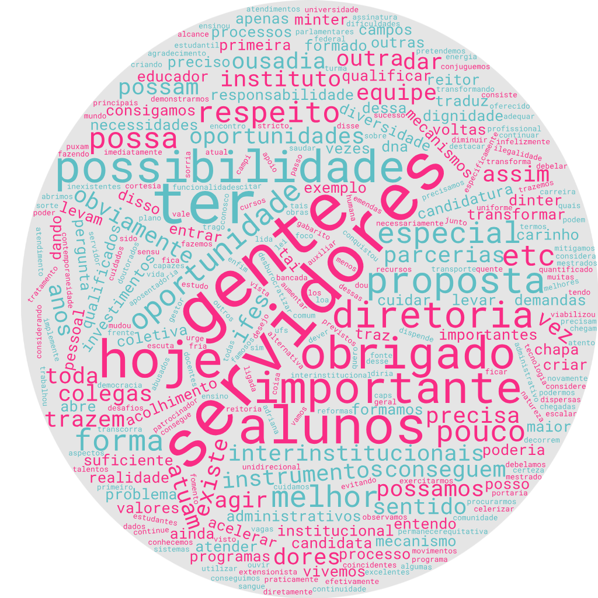
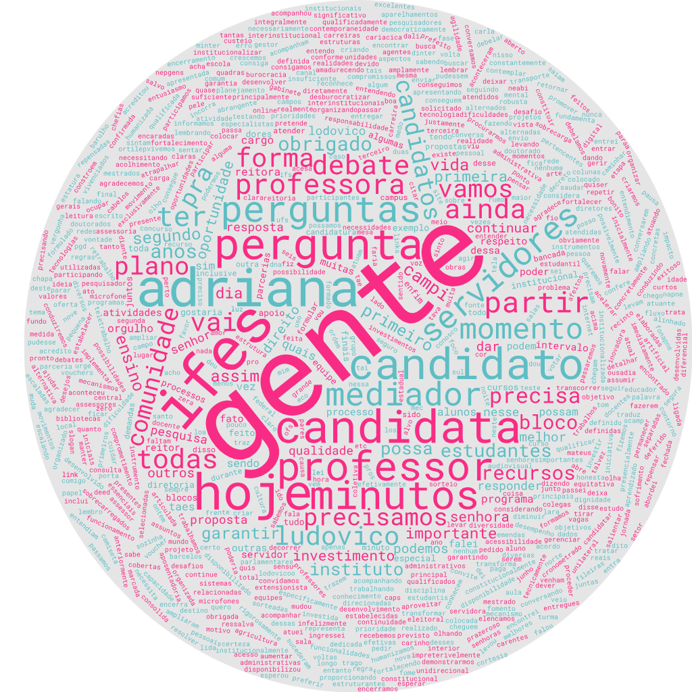

📊 Etapas da Análise
- Transcrição e Revisão do vídeo
- Pré-processamento dos textos
- Geração das nuvens de palavras
- Análises Críticas
🧠 Prompts e Resultados
Para auxiliar no desenvolvimento deste trabalho foram realizadas algumas consultas no chatGPT. Abaixo encontram-se alguns prompts utilizados neste processo e os resultados obtidos
- Remoção de caracteres especiais e pontuação
- Conversão para minúsculas
- Tokenização
- Remoção de stopwords
- Stemming ou lematização (dependendo da necessidade)
- print da estrutura de arquivos no colab "quero colocar todo o documento “debate-completo.docx” em lower case. como faço isso?"
- "faça um script seguindo o mesmo contexto da solicitação anterior para que o output seja um texto normalizado para servir de input para a geração de uma nuvem de palavras."
- "agora considere novamente o arquivo /content/Trabalho-CE/debate-completo.docx. Quero individualizar as falas do professor ludovico e da candidata adriana em dois arquivos diferentes"
Google Colab 🐍
- "Preciso de uma análise crítica separada para os pontos positivos dos dois candidatos do texto a seguir: " Transcrição enviada por inteiro.
- "Elabore os pontos críticos e faça também uma comparação, deixe de lado os pontos negativos"
- "Com base nas análises críticas extraídas das falas dos dois candidatos (Adriana e Ludovico), elabore um quadro comparativo com foco apenas nos pontos críticos e diferenciais positivos. Remova os aspectos negativos e organize os elementos de forma clara, destacando os principais eixos temáticos da campanha de cada um."
☁️ Geração das Nuvens de Palavras
Para a geração das nuvens de palavras, utilizamos o site https://www.wordclouds.com/
Nuvem de Palavras - Professor Ludovico
Nuvem de Palavras - Professora Adriana

Nuvem de Palavras - Debate Completo
🧐 Análises Críticas
Adriana
Gestão e Planejamento
Técnica e estruturada, com valorização do PDI, núcleos temáticos e planejamento participativo.
Estilo de Liderança
Participativa, valorizando o coletivo, a escuta ativa e a gestão humanizada.
Foco em Permanência Estudantil
Propõe ampliação de assistência (alimentação, cultura, esportes), com centralidade nos estudantes.
Capacitação dos Servidores
Propõe ampliação dos programas stricto sensu e atenção especial aos TAEs nas áreas técnicas.
Inovação e Modernização
Modernização de processos e estruturação de sistemas para reduzir retrabalho.
Valorização da Carreira
Destaca a formação docente e trajetória na educação como base de legitimidade e pertencimento.
Articulação Política
Propõe construção de articulações com base no cargo, respeitando a institucionalidade do IFES.
Identidade Institucional
Promove inclusão de todos (docentes, TAEs, estudantes), destacando diversidade como eixo central.
Ludovico
Gestão e Planejamento
Prática e contínua, com base na manutenção de redes institucionais e na experiência acumulada.
Estilo de Liderança
Técnica-relacional, centrada na figura do educador e no protagonismo do reitor como articulador.
Foco em Permanência Estudantil
Identifica permanência como “dor central” e propõe criação de diretorias específicas para apoio direto.
Capacitação dos Servidores
Expansão com parcerias (UFES, multicampi) e institucionalização de editais amplos e equitativos.
Inovação e Modernização
Criação de IA institucional para desburocratização com uso de talentos internos e protocolos seguros.
Valorização da Carreira
Reforça orgulho institucional por sua trajetória de 50 anos, da base à gestão estratégica.
Articulação Política
Defende continuidade das articulações já consolidadas com bancada e uso da “reitoria itinerante”.
Identidade Institucional
Aponta identidade forte com a instituição, defendendo a lealdade e compromisso com a história do IFES.